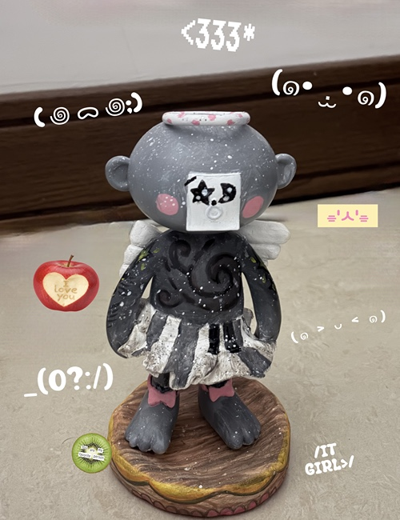
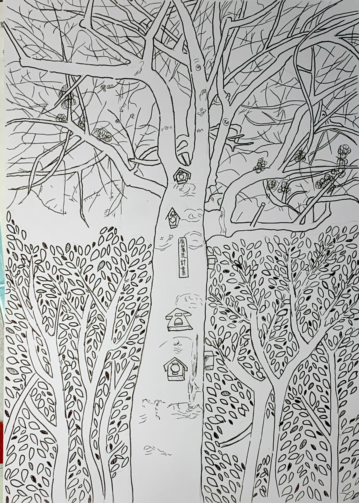
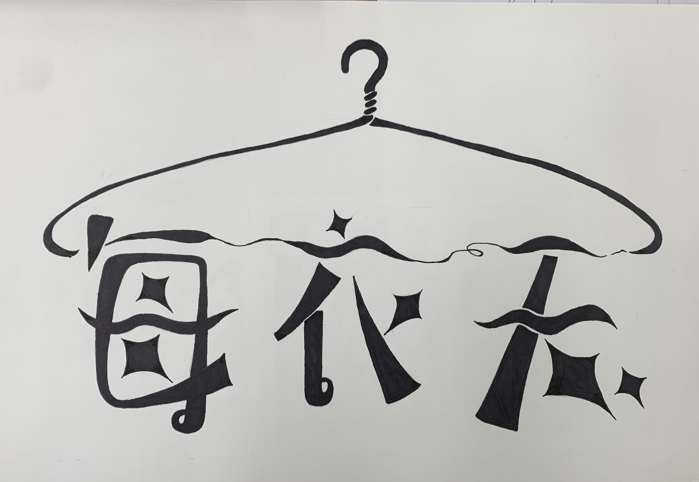

芷妤 藍
新北市板橋區雙十路二段38號
a115040047@mail.shu.edu.tw
您好！我是藍芷妤，⽬前就讀於世新⼤學圖文傳播學系。熱愛網頁設計、視覺設計與數位內容創作。具備 HTML/CSS/JavaScript 基礎，並具備良好的團隊溝通與問題解決能⼒。
您好！我是藍芷妤，⽬前就讀於世新⼤學圖文傳播學系。熱愛網頁設計、視覺設計與數位內容創作。具備 HTML/CSS/JavaScript 基礎，並具備良好的團隊溝通與問題解決能⼒。
高中考完學測後，找了一份打工的工作，這也是我的第一份打工，剛開始從外場開始學習，漸漸的越來越熟悉，現在已經進入內場也學會備料，在這裡學習到許多合作經驗與隨機應變。
課餘時間我熱愛街頭攝影與日常小插圖，喜歡背著相機記錄城市街景與⾃然⾵光。每逢假⽇也喜歡在紙上畫一些隨手的插圖，並從⽇常⽣活中汲取視覺創作靈感。
在室內休閒⽅⾯，我喜歡看科技趨勢、研究股票或基金，還有 AI ⽣成⼯具，並透過⾃主練習不斷精進網⾴設計與數位敘事能⼒。
運⽤心智圖、情緒版打造獨一無二故事性的公仔，在大ㄧ完成第一個作品。

拍一張校園寫照，再把照片一比一畫出來。

結合品行銷與核心價值的設計，創造出品牌logo。

畫兩個物件，再把他們形狀拆解 轉化，最後把兩者融合成爲有故事性的畫。

攝影學課程讓我們拍主題是校園的景，我發現了校園的花，用俯視與復古濾鏡拍攝。